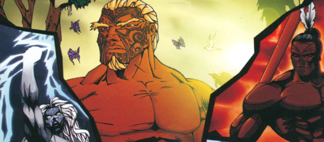

How To Help

Katiakitanga means guardianship, stewardship and protection in Maori. In recent times, it's common used to explain we can help the environment through a Maori lens. An example of this is a rahui, which is a temporary ban on taking food from an area. This helped nature restore itself from human influence, thus making hunting and gathering practices sustainable.

As individuals, we can all be kaitiaki (guardians) of the environment in many ways, with methods listed below.
- Eat less meat and dairy, as a lot of emissions are produced to make them.
- Supporting sustainable brands
- Join tree plantings and there local environmental initiatives
- Invest in/switch to renewable energy